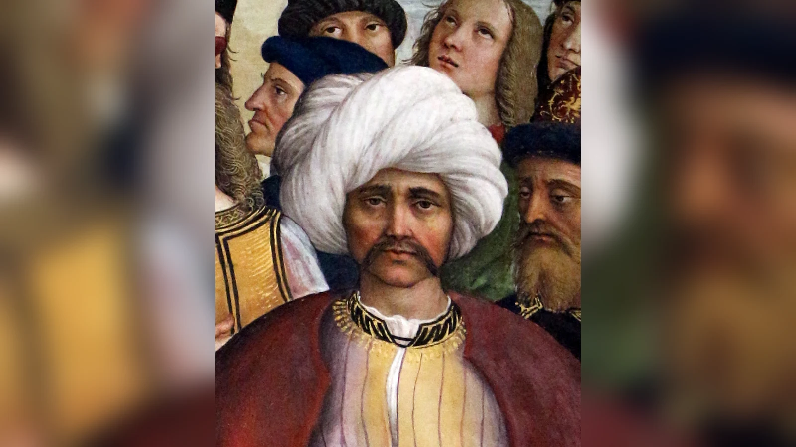
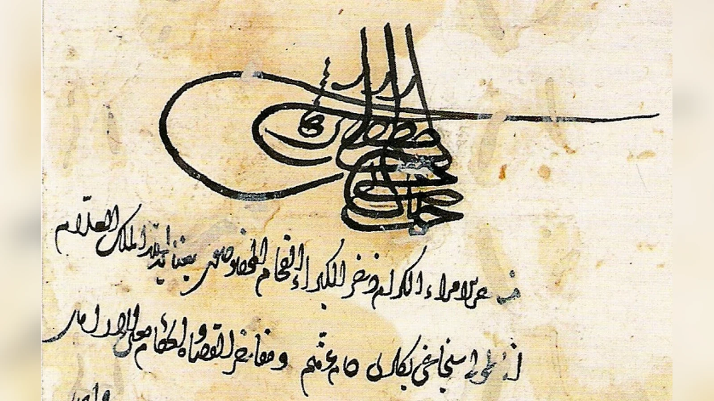
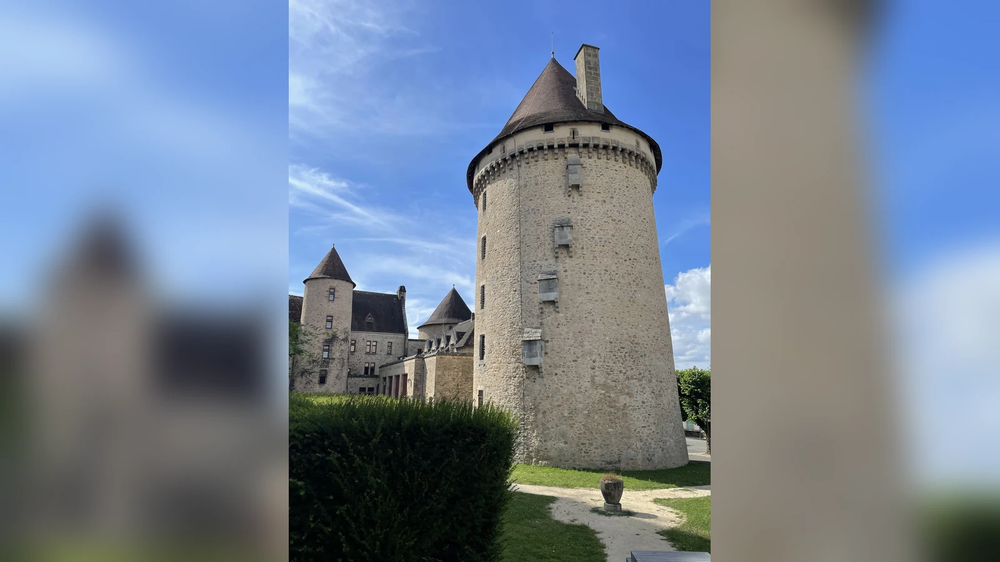
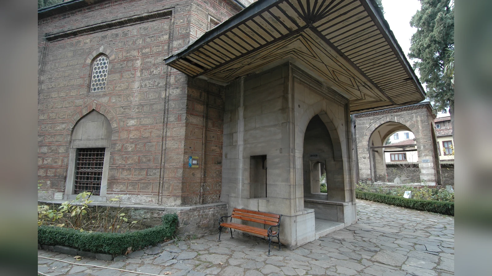

Cem Sultan olayı, Fatih Sultan Mehmed’in 1481’de ölümünden sonra oğulları Bayezid ile Cem arasında başlayan Osmanlı taht mücadelesinin, Cem’in askerî yenilgilerinin ardından Osmanlı sınırlarını aşarak Rodos Şövalyeleri, Fransa, Papalık, Napoli, Macaristan ve başka siyasi aktörlerin dahil olduğu uluslararası bir meseleye dönüşmesidir. Cem önce Bursa’da hükümdarlık iddiasını ortaya koydu, adına hutbe okutup para bastırdı; Yenişehir’de II. Bayezid’e yenildi, Memlük ülkesine çekildi, yeniden Anadolu’ya döndü ve ikinci girişimi de sonuçsuz kalınca 1482’de Rodos’a geçti. Fakat güvenli bir geçiş ve yeni siyasi destek umuduyla çıktığı yol, zamanla kendi hareket alanını kaybettiği uzun bir gözetim hayatına dönüştü.
Olayı yalnız “iki kardeş taht için savaştı ve biri Avrupa’ya kaçtı” diye anlatmak asıl tarihsel problemi görünmez kılar. Osmanlı verasetinde tahtın otomatik biçimde en büyük oğula geçtiği değişmez bir sistem yoktu. Hanedan mensubu bir şehzadenin hükümdarlık iddiası, yeterli askerî ve siyasi destek bulabildiği sürece gerçek bir seçenek oluşturabiliyordu. Bu nedenle Cem’in yenilmesinden sonra bile hayatta kalması II. Bayezid açısından önemini yitirmedi. Tam tersine, Cem Osmanlı tahtına ulaşma gücünü kaybettikçe başka devletlerin elinde Bayezid üzerinde baskı kurabilecek daha kullanışlı bir araca dönüştü.
Cem’in hikâyesinin en çarpıcı tarafı burada başlar. 1481’de Bursa’da kendi adına para bastırabilen bir şehzade, birkaç yıl sonra nerede yaşayacağına bile kendisi karar veremeyen bir siyasi rehine hâline gelmişti. Taht iddiası onun açısından iktidar talebiydi; Rodos Şövalyeleri, Papalık ve çeşitli Avrupa sarayları açısından ise pazarlık değeri taşıyan bir imkândı. Cem’in siyasi gücü ile kişisel özgürlüğü böylece ters yönlerde ilerledi: Onu değerli kılan şey Osmanlı hanedanına mensup olmasıydı, fakat tam da bu değer kendi geleceği üzerindeki kontrolünü giderek azaltıyordu.
Cem Sultan Kimdi?
Cem, Fatih Sultan Mehmed’in oğullarından biri olarak 23 Aralık 1459’da Edirne’de doğdu. Osmanlı hanedanındaki diğer şehzadeler gibi küçük yaşta devlet yönetimine hazırlanması amacıyla sancak görevlerine gönderildi. 1469’da Kastamonu’ya, ağabeyi Şehzade Mustafa’nın 1474’te ölümünün ardından Konya’ya sancak beyi tayin edildi. Konya görevi özellikle önemlidir; çünkü Cem burada yalnız idarî tecrübe kazanmadı, kendi çevresini ve siyasi ilişkilerini de geliştirdi.
Şehzadelik sancakları Osmanlı sisteminde yalnız eğitim yerleri değildi. Bir şehzadenin çevresinde lalalar, askerler, bürokratlar, şairler, âlimler ve yerel güç sahiplerinden oluşan bir ağ gelişebiliyordu. Taht boşaldığında bu ağların ne kadar hızlı harekete geçebildiği hükümdarlık yarışında belirleyici olabiliyordu. Cem’in Konya’daki konumu ona Anadolu’da belirli bir destek tabanı sağladı; fakat başkente uzaklığı Fatih’in ölümünden sonra ciddi dezavantaja dönüşecekti.
Cem’in edebî kişiliği de hayatının önemli parçasıdır. Arapça ve Farsça öğrendi, Türkçe ve Farsça şiirler yazdı, çevresinde daha sonra “Cem şairleri” diye anılan edebî bir topluluk oluştu. Türkçe divanı günümüze ulaşmıştır. Gurbette yazdığı şiirlerde ayrılık ve talihsizlik temasının belirginleşmesi, sonraki kuşakların onu romantik bir “talihsiz şehzade” olarak hatırlamasını kolaylaştırdı. Fakat edebî Cem ile siyasi Cem’i birbirine karıştırmamak gerekir. Şiirlerinde gurbet acısını dile getiren kişi, 1481’de taht için ordu toplamış, Bursa’yı ele geçirmiş ve hükümdarlık iddiasını açıkça ortaya koymuş aktif bir hanedan mensubuydu.
Bu ayrım önemlidir; çünkü Cem’i yalnız başına gelen olayların pasif kurbanı gibi anlatmak, hayatının ilk siyasi safhasını eksiltir. Avrupa’ya geçtikten sonra hareket alanı gerçekten daraldı, fakat başlangıçta kendi taht iddiası için risk alan, ittifak arayan ve askerî mücadeleye girişen bir aktördü. Trajedisi, hiçbir zaman iradesi olmayan biri olmasından değil, sahip olduğu siyasi iradenin zamanla başkalarının çıkarları tarafından kuşatılmasından doğdu.
Fatih’in Ölümünden Sonra İki Kardeş Neden Karşı Karşıya Geldi?
Fatih Sultan Mehmed 3 Mayıs 1481’de öldüğünde Osmanlı tahtına kimin geçeceği modern monarşilerdeki katı büyük oğul önceliğiyle belirlenmiyordu. Hanedanın erkek üyeleri arasında hükümdarlık hakkının kime ait olacağı, gelenek, askerî destek, devlet adamlarının tercihi, başkente ulaşma hızı ve fiilî güç dengeleriyle şekilleniyordu. Bu nedenle Bayezid’in Cem’den büyük olması tek başına sonucu belirleyen hukuk kuralı değildi.
Bayezid Amasya’da, Cem ise Konya’daydı. Başkentteki devlet adamlarının hangi şehzadeyi desteklediği ve ölüm haberinin onlara ne hızla ulaştırıldığı kritik hâle geldi. Sadrazam Karamânî Mehmed Paşa’nın Cem’e yakın durduğu ve Fatih’in ölüm haberini iki şehzadeye ulaştırmaya çalıştığı bilinir. Fakat İstanbul’daki yeniçerilerin ve diğer güç odaklarının tavrı Bayezid lehine gelişti. Karamânî Mehmed Paşa çıkan karışıklıkta öldürüldü. Bayezid’in oğlu Korkut geçici olarak tahta vekâlet ederken Bayezid İstanbul’a ulaştı ve 22 Mayıs 1481’de hükümdarlığını fiilen kurdu.
Bu aşama Cem’in sonraki yenilgisini anlamak için önemlidir. Taht mücadelesi yalnız iki kardeşin kişisel niteliklerinin karşılaştırıldığı düello değildi. Başkenti, merkez ordusunu, hazineyi ve devlet bürokrasisinin büyük bölümünü kontrol etmek muazzam avantaj sağlıyordu. Bayezid İstanbul’a ulaştığında artık yalnız “tahtın adaylarından biri” değil, cülûs etmiş hükümdardı. Cem ise mevcut hükümdarı devirmek zorunda olan rakip şehzade konumuna geçti.
Yeniçerilere dağıtılan cülûs bahşişi ve ulûfe düzenlemeleri de merkezî desteğin önemini gösterir. Osmanlı tahtının meşruiyeti yalnız soy bağına dayanmıyordu; başkentte hükümdar olarak tanınmak, kapıkullarının bağlılığını sağlamak ve devlet mekanizmasını çalıştırmak gerekiyordu. Cem’in hanedan mensubu olarak iddiası meşru bir siyasi tehdit yaratıyordu, fakat Bayezid’in elindeki kurumsal araçlar daha güçlüydü.
Burada “Fatih aslında Cem’i veliaht seçmişti” gibi kesin iddialara ihtiyatla yaklaşmak gerekir. Osmanlı kaynaklarında ve sonraki literatürde tarafların meşruiyetini güçlendiren farklı anlatılar vardır. Cem’in kendisini tahta daha layık görmesi ve babasının iradesine ilişkin iddialar öne sürmesi, bunların tartışmasız bir veliaht tayini belgesi olduğu anlamına gelmez. Daha güvenli sonuç, Fatih’in ölümünde veraset meselesinin otomatik çözüme sahip olmadığı ve bu boşluğun siyasi mücadele ürettiğidir.
Cem olayını anlamak için hanedanın bu yapısına bakmak gerekir. Eğer taht tartışmasız biçimde tek kişiye geçseydi, Cem’in varlığı bu kadar uzun süre uluslararası değer taşımazdı. Onu Avrupa sarayları için önemli yapan şey yalnız Fatih’in oğlu olması değil, Osmanlı siyasi geleneğinde hükümdarlık iddiasının tamamen anlamsız sayılamamasıydı. Başka bir devlet Cem’i serbest bırakıp askerî destek sağlarsa, Bayezid’in karşısına hanedandan gelen alternatif çıkarabilirdi. Cem’in “koz” değeri bu ihtimalden doğdu.
Bursa’daki Kısa İktidar İddiası Ne Anlama Geliyordu?

Bayezid İstanbul’da tahta çıktıktan sonra Cem mücadeleden vazgeçmedi. Anadolu’daki destekçilerini toplayarak harekete geçti ve Bursa’ya girdi. Burada yaklaşık on sekiz gün kaldı. Adına hutbe okutması ve para bastırması, sıradan bir isyan lideri gibi davranmadığını açıkça gösteriyordu. İslam hükümdarlık geleneğinde hutbenin hükümdar adına okunması ve sikke basılması egemenliğin en görünür işaretleri arasındaydı.
Bu nedenle Cem’in Bursa’daki dönemi “padişah oldu” cümlesiyle basitleştirilemez ama önemsiz de sayılamaz. Osmanlı başkentini ve devletin ana mekanizmasını ele geçirmedi; hanedanın kalıcı ve genel kabul görmüş hükümdarı hâline gelmedi. Buna karşılık Bursa gibi eski Osmanlı merkezinde kendi hükümdarlık sembollerini kullanması, iddiasının teorik olmadığını gösterdi. O, Bayezid’den bir sancak veya gelir isteyen kardeş değil, egemenlik talep eden rakipti.
Kaynaklarda Cem’in imparatorluğun Anadolu ve Rumeli olarak iki kardeş arasında paylaşılmasını teklif ettiği aktarılır. Bayezid’in bu teklifi saltanatın bölünemeyeceği gerekçesiyle reddettiği anlatılır. Teklifin ayrıntıları ve kullanılan ifadeler kaynaklara göre değerlendirilmelidir; fakat olay Osmanlı egemenlik anlayışındaki önemli gerilimi ortaya koyar. Hanedan üyeleri arasında ülke paylaşımı eski Türk siyasi geleneklerinde örneksiz değildi, ancak on beşinci yüzyıl sonundaki Osmanlı Devleti artık güçlü merkezî hükümdarlık doğrultusunda ilerliyordu. Fatih Sultan Mehmed’in İstanbul’u fethi sonrasında güçlenen merkezî hükümdarlık düşünüldüğünde imparatorluğun iki bağımsız hükümdarlığa ayrılması Bayezid için kabul edilebilir çözüm değildi.
Üstelik Bayezid açısından sorun yalnız toprak kaybı değildi. Cem Anadolu’da ayrı hükümdar olarak kaldığı sürece iki Osmanlı merkezi arasında kalıcı rekabet doğacak, her dış güç kardeşlerden birini diğerine karşı destekleyebilecekti. Cem’in önerisi kısa vadede savaşı durdurabilecek görünse bile uzun vadede veraset sorununu çözmek yerine kurumsallaştırabilirdi.
Cem’in Bursa’da hükümdarlık işaretlerini kullanması sonraki Avrupa yıllarındaki siyasi değerinin de temelidir. Rodos Şövalyeleri veya Papalık ellerindeki kişiyi sıradan sürgün prens olarak görmüyordu. O, bir zamanlar Osmanlı ülkesinde fiilen hükümdarlık iddiasını görünür hâle getirmiş ve belirli destek toplamış kişiydi. Avrupa’daki pazarlık değeri, 1481’de Bursa’da gösterdiği bu siyasi kapasitenin hatırasından besleniyordu.
Cem Sultan Neden Yenildi?
Cem’in kuvvetleri ile Bayezid’in ordusu 22 Haziran 1481’de Yenişehir yakınlarında karşılaştı. Cem ağır yenilgi aldı ve güneye çekilmek zorunda kaldı. Bu yenilgiyi yalnız iki kardeşin askerî yetenekleri üzerinden açıklamak yetersizdir. Bayezid başkenti, merkez ordusunu ve devletin ana kaynaklarını kontrol ediyordu. Cem ise bölgesel destek ağlarına dayanıyor, bu desteği kalıcı devlet kapasitesine dönüştürmeye çalışıyordu.
Yenişehir yenilgisi Cem’in Anadolu’daki ilk iktidar girişimini bitirdi. Konya üzerinden güneye çekildi; Tarsus ve ardından Memlük Sultanlığı topraklarına geçti. Kahire’de Memlük Sultanı Kayıtbay tarafından iyi karşılandı. Buradaki kabulü Cem’in Memlükler tarafından hemen Osmanlı tahtına çıkarılmak üzere desteklendiği anlamına gelmez. Memlük yönetimi için Fatih’in oğlu değerli diplomatik figürdü, fakat Bayezid’le doğrudan savaş riskine girmek başka bir karardı.
Cem 1481 sonu ile 1482 başında Hicaz’a giderek hac görevini yerine getirdi. Bu yolculuk onu Osmanlı tarihinde hacca giden şehzadeler arasında özel yere yerleştirmiştir. Fakat siyasi mücadele bitmemişti. Anadolu’dan gelen haberler ve Karamanoğlu Kasım Bey gibi aktörlerin teşviki Cem’i yeniden denemeye yöneltti.
1482’de Anadolu’ya döndüğünde eski desteğini tam anlamıyla toparlayamadı. Karamanoğulları açısından Cem, Osmanlı baskısına karşı kullanılabilecek hanedan mensubuydu; Cem açısından ise Karaman desteği tahta dönüş yoluydu. İki tarafın çıkarları kesişiyordu fakat aynı değildi. Karamanoğlu Kasım Bey’in Cem’i desteklemesi, bütün Anadolu’nun Cem’in arkasında olduğu anlamına gelmez.
Konya ve çevresindeki girişimler sonuçsuz kaldı. Cem’in taraftarları dağıldıkça Bayezid’in üstünlüğü daha belirgin hâle geldi. Artık mesele yalnız savaş kaybetmek değildi; Cem’in Osmanlı toprakları içinde yeni ordu kurabileceği güvenli siyasi alan daralıyordu. Bayezid’in merkezî iktidarı güçlenirken Cem’in yerel ittifakları süreklilik göstermedi.
Cem’in yenilgisini kişisel başarısızlık diye okumak bu nedenle eksiktir. Bir şehzade ne kadar iddialı olursa olsun başkent, kapıkulları, hazine ve bürokrasiyi elinde tutan hükümdara karşı yalnız hanedan soyuyla üstünlük kuramazdı. Cem’in 1481’de sahip olduğu fırsat, Bayezid’in İstanbul’a daha erken ulaşıp iktidarı kurmasıyla daralmıştı. Sonraki askerî yenilgiler bu başlangıç dezavantajını büyüttü.
Buradan daha genel bir çıkarım yapılabilir: Osmanlı verasetinde bütün şehzadeler teorik olarak potansiyel hükümdar olabilse de pratikte taht mücadelesi eşit şartlarda başlamıyordu. Coğrafya, haberleşme hızı, merkezdeki destek ve askerî ağlar soy bağı kadar belirleyiciydi. Cem’in hikâyesi, “tahta hakkı olmak” ile “tahta ulaşabilecek güce sahip olmak” arasındaki farkın en çarpıcı örneklerinden biridir.
Cem Sultan Neden Rodos’a Gitti?
Anadolu’daki ikinci girişiminin de başarısız olmasının ardından Cem’in seçenekleri daraldı. 29 Temmuz 1482’de yaklaşık otuz kişilik maiyetiyle Rodos’a ulaştı. Ada, St. Jean Şövalyeleri ya da Osmanlı kaynaklarındaki adıyla Rodos Şövalyeleri’nin yönetimindeydi. Büyük Üstat Pierre d’Aubusson Cem’i törenle karşıladı.
Cem’in Rodos’a gidişini ilk andan itibaren “kendini bilerek esarete teslim etti” diye anlatmak doğru değildir. Şehzadenin beklentisi şövalyelerin yardımıyla Rumeli’ye geçebilmek ve taht mücadelesini başka cepheden sürdürebilmekti. Rodos onun gözünde güvenli geçiş ve yeni destek bulabileceği durak olabilirdi. Şövalyeler açısından ise adaya gelen kişinin değeri bambaşkaydı.
Pierre d’Aubusson kısa sürede Cem’in Osmanlı hükümdarı üzerinde baskı oluşturabilecek olağanüstü siyasi değer taşıdığını gördü. Papa, Macaristan ve Napoli gibi merkezlerle yazışarak ne yapılabileceğini araştırdı. II. Bayezid de aynı gerçeği fark etmişti. Cem serbest kalır ve düşman bir güç tarafından desteklenirse yeni taht girişimi başlayabilirdi. Bu nedenle Bayezid için en güvenli çözüm kardeşinin Osmanlı sınırlarından uzakta ve denetim altında tutulmasıydı.
Bayezid ile şövalyeler arasında yapılan düzenlemeler sonucunda Cem’in serbest bırakılmaması karşılığında yıllık 40.000 duka düzeyinde ödeme yapılması kabul edildi; şövalyelere ticari ayrıcalıklar da sağlandı. Bu ödeme bazen yanlış biçimde Cem’in “masraf parası” gibi masumlaştırılır, bazen de doğrudan “Cem’in satılması” şeklinde dramatize edilir. Siyasi anlamı daha açıktır: Bayezid, rakip şehzadenin hareket özgürlüğünün sınırlandırılması için ekonomik bedel ödemeye razıydı.
İşte Cem’in kendi geleceği üzerindeki kontrolünü kaybetmesinin en belirgin eşiği burasıdır. Rodos’a kendi kararıyla gitmişti; fakat Rumeli’ye geçme talebi kabul edilmedi. Şövalyeler onu ellerinde tutmanın serbest bırakmaktan daha değerli olduğunu gördüler. Cem artık destek arayan bağımsız siyasi aktör olmaktan çıkıp başkalarının birbirleriyle yaptığı anlaşmalarda değeri hesaplanan kişiye dönüşüyordu.
Bu dönüşüm bir anda tamamlanmadı. Cem’in mektupları, bağlantı arayışları ve kaçış ihtimalleri onun bütünüyle iradesiz olmadığını gösterir. Fakat hareket edeceği coğrafyayı, görüşeceği kişileri ve nereye sevk edileceğini belirleme gücü giderek şövalyelerin eline geçti. “Misafir” ile “esir” arasındaki sınır tam da bu noktada bulanıklaşır: Resmî nezaket korunabilir, fakat kişi istediği yere gidemiyorsa siyasi özgürlüğü fiilen sınırlıdır.
Bir Şehzade Nasıl Avrupa’nın Siyasi Kozuna Dönüştü?
Cem 1482 sonbaharında Rodos’tan Fransa’ya gönderildi. Bu sevk onun güvenliğini sağlama gerekçesiyle açıklanabilirdi, fakat aynı zamanda Osmanlıların askerî baskısından uzak, şövalyelerin denetleyebileceği alana taşınması anlamına geliyordu. Nice, Chambéry ve daha sonra şövalyelerin Fransa’daki mülkleri arasında dolaştırıldı. Fransa içlerinde farklı konaklara götürüldü; Bourganeuf’ta kendi adıyla anılacak kulede tutulması ise 1486’da başladı. Bu yer değiştirmeler, istediği yere gidebildiği anlamına gelmiyordu.
“Avrupa Cem’i esir aldı” cümlesi burada yanıltıcıdır; çünkü Avrupa tek siyasi aktör değildi. Rodos Şövalyeleri, Fransa kralı, Papalık, Macaristan kralı, Napoli ve Venedik birbirinden farklı çıkarlarla hareket ediyordu. Bazıları Cem’i Osmanlılara karşı sefer projesinde kullanmak istiyor, bazıları onun rakip gücün eline geçmesini engellemeye çalışıyor, bazıları Bayezid’le ilişkilerini korumayı daha değerli görüyordu.
Bu çok aktörlü yapı Cem’in değerini artırırken özgürlüğünü daha da azaltıyordu. Çünkü Cem’e sahip olmak yalnız onu kullanabilmek değil, başkasının kullanmasını engellemek anlamına da geliyordu. Siyasi kozun gücü her zaman fiilen masaya sürülmesinden gelmez. Bazen kullanılma ihtimali bile karşı tarafın davranışını değiştirmeye yeter.
Cem örneğinde bu fark özellikle önemlidir. Avrupa güçleri onu hiçbir zaman başarılı biçimde Osmanlı tahtına çıkaramadı. Hatta uzun yıllar boyunca büyük bir Osmanlı karşıtı seferde aktif olarak kullanamadılar. Buna rağmen Bayezid kardeşinin nerede tutulduğunu takip etti, şövalyeler ve Papalıkla diplomatik ilişkiler kurdu, ödemeler yaptı ve Cem’in düşman bir hükümdarın eline geçmesini önlemeye çalıştı. Demek ki Cem’in siyasi değeri “kullanıldı mı?” sorusundan önce “kullanılabilir miydi?” sorusunda yatıyordu.
Bu durum rehine siyasetinin mantığını açıklar. Bir rehineyi değerli kılan, sürekli zarar vermesi değil, gerektiğinde zarar verebilecek bir sürecin anahtarı olmasıdır. Cem’in serbest bırakılması Anadolu’da veya Rumeli’de hemen büyük isyan çıkaracağının garantisi değildi. Yıllar geçtikçe eski destek ağları zayıflamıştı. Fakat hanedan mensubu olması ve geçmişte Bursa’da hükümdarlık iddiası kurmuş bulunması, ihtimali sıfırlamıyordu.
II. Bayezid’in davranışını yalnız “kardeşinden korkuyordu” diye psikolojik cümleye indirgemek de bu nedenle yetersizdir. Bayezid bir hükümdar olarak rakip hanedan mensubunun yabancı güçlerin elinde bulunmasının oluşturduğu stratejik riski yönetmeye çalışıyordu. Kardeşlik ilişkisi olaya insani boyut ekler; devlet siyaseti açısından belirleyici olan Cem’in soyunun ve iddiasının kullanılabilir olmasıydı.
Benzer şekilde şövalyelerin Cem’i “koruduğunu” söylemek ile onun hareketlerini sınırladığını söylemek birbirini dışlamaz. Geç on beşinci yüzyıl diplomasisinde koruma, misafirlik, gözetim ve rehine statüsü modern hukuk kategorileri kadar net ayrılmıyordu. Cem güvenli konaklarda tutulabilir, saygılı biçimde ağırlanabilir ve yine de istediği yere gitmesine izin verilmeyebilirdi. Onun Avrupa hayatının paradoksu tam olarak budur.
Fransa Yılları: Koruma mı, Gözetim mi?

Cem’in Fransa’daki yılları bazen romantik maceralar ve yerel efsaneler üzerinden anlatılır. Oysa siyasi açıdan önemli olan, şehzadenin şövalyelerin kontrolündeki çeşitli mekânlarda tutulması ve dış dünyayla temasının sınırlandırılmasıdır. Nice’ten Savoie topraklarına, oradan Fransa içlerine uzanan yolculuk bir özgür seyahat değildi.
Bourganeuf’ta 1484–1486 arasında Cem’in tutulması için inşa edilen yapı bugün “Tour Zizim” adıyla bilinir; “Zizim” Avrupa kaynaklarında Cem için kullanılan adlardan biridir. Günümüzdeki kule ve yerel hafıza, Cem’in Fransa’daki varlığının ne kadar kalıcı kültürel iz bıraktığını gösterir. Fakat bu tür mekânları romantik “prensin şatosu” olarak sunmak yanıltıcıdır. Şehzadenin konfor düzeyi ne olursa olsun siyasi hareketliliği denetleniyordu.
Cem zaman zaman Macaristan gibi başka güçlerle temas kurmaya çalıştı. Bu girişimler onun taht iddiasından tamamen vazgeçmediğini gösterir. Fakat iletişim kanalları gözetim altındaydı ve yanında bulunan insanların faaliyetleri ciddi risk taşıyordu. Cem’in yakın çevresinden Sa‘dî-i Cem’in daha Rodos döneminde İstanbul’a gizli mektuplarla giderken yakalanıp öldürülmesi, şehzadenin bağlantı kurma çabasının ne kadar tehlikeli olduğunu gösteren örneklerden biridir.
Yıllar geçtikçe Cem’in siyasi konumu değişti. 1481’de kendi ordusunu kurabilen şehzade ile 1488’de Fransa’da şövalyelerin denetiminde bulunan Cem aynı hukuki hanedan kimliğini taşıyordu ama aynı fiilî kapasiteye sahip değildi. Avrupa güçleri için değeri devam ederken kendi adına harekete geçebilme kapasitesi azalıyordu.
Bu durum siyasi gücün iki farklı türünü ayırmamızı sağlar. Cem’in “sembolik gücü” yüksekti: Fatih’in oğluydu, Bayezid’in kardeşiydi ve Osmanlı tahtı için alternatif olarak sunulabilirdi. Kendi adına harekete geçme gücü ise giderek azalıyordu: Ordusu, toprağı, hazinesi ve serbest hareket imkânı yoktu. Başkaları onun hanedan kimliğinin sağladığı meşruiyeti kendi askerî ve diplomatik güçlerine eklemek istiyordu.
Cem olayını benzersiz kılan da bu tersliktir. Bir insan siyasi bakımdan ne kadar değerli hâle gelirse kendi hayatı üzerindeki kontrolü o kadar azalabilir. Cem’in Avrupa’da gördüğü ilgi kişisel özgürlüğünün göstergesi değildi; çoğu zaman tam tersine, serbest bırakılmayacak kadar değerli olduğunun göstergesiydi.
Cem Sultan Papalığa Nasıl Geçti?
Rodos Şövalyeleri Cem’i süresiz biçimde Fransa’da tutabilecek tek aktör değildi. Şehzadenin kimin denetiminde olacağı Avrupa diplomasisinin tartışmalı meselelerinden birine dönüştü. Macar Kralı Matthias Corvinus gibi hükümdarlar Cem’i Osmanlılara karşı kullanmak istiyordu. Papalık da olası Haçlı seferi projelerinde Fatih’in oğlunun sağlayabileceği siyasi imkânı görüyordu.
Uzun pazarlıkların ardından Cem 1489’da Roma’ya götürüldü ve Papa VIII. Innocentius’un denetimine girdi. Bu devir teslim yalnız mekân değişikliği değildi. Cem artık askerî-dinî bir tarikatın kontrolünden Avrupa’nın en önemli diplomatik merkezlerinden birine geçmişti. Papalık için onun varlığı Osmanlılara karşı planlanan seferlerde propaganda ve meşruiyet aracı olabilirdi.
Bayezid ise Cem’in Roma’da bulunmasını kabullenmek zorunda kaldı fakat onun serbest bırakılmaması için diplomatik ve mali mekanizmaları sürdürdü. 1490’da Osmanlı elçisinin Roma’ya giderek üç yıllık gözetim karşılığı 120.000 duka düzeyinde ödeme yaptığı kaydedilir. Bu rakam, daha önce şövalyelere verilen yıllık 40.000 duka düzenlemesiyle ilişkilidir; farklı aşamalardaki ödemeleri tek bir “fidye” rakamı gibi sunmamak gerekir.
Papalık açısından Cem’in değeri iki yönlüydü. Bir yandan Osmanlılara karşı tasarlanan seferde kullanılabilecek hanedan mensubuydu. Diğer yandan Bayezid’le diplomatik pazarlıkta ekonomik ve siyasi avantaj sağlıyordu. Bu iki çıkar birbiriyle çelişebilirdi: Cem gerçekten serbest bırakılıp Osmanlılara karşı kullanılırsa Bayezid’le yürütülen gözetim anlaşması sona erecek ve büyük risk doğacaktı. Onu kullanma tehdidi, bazen gerçekten kullanmaktan daha kârlıydı.
Bu noktada “Papalık Cem’i tahta çıkarmak istiyordu” gibi tek cümleli açıklamalar yetersiz kalır. VIII. Innocentius dönemindeki Haçlı planları, Macaristan ve diğer güçlerin beklentileri, Bayezid’le pazarlıklar ve Avrupa devletlerinin kendi rekabetleri aynı anda işliyordu. Cem, ortak bir “Avrupa projesinin” merkezinde değil, birbiriyle rekabet eden projelerin kesişimindeydi.
Cem’e Hristiyan olması yönünde teklifler yapıldığı ve onun bunlara belirli veciz sözlerle cevap verdiği yönünde popüler anlatılar bulunur. Bu anlatılarda dolaşan veciz sözlerin her biri aynı güvenilirlikte bir tarihsel kayda dayanmaz. Cem’in Müslüman kimliğini koruduğu açıktır; fakat sonraki dönemlerde oluşturulan dramatik konuşmaların kelimesi kelimesine tarihsel kayıt olduğunu varsaymak doğru değildir.
VIII. Innocentius ve VI. Alexander Dönemlerinde Cem’in Değeri
Papa VIII. Innocentius’un 1492’de ölümünden sonra Rodrigo Borgia, VI. Alexander adıyla papa seçildi. Cem’in konumu yeni papalık döneminde de önemini korudu. Ancak papaların Cem’e yaklaşımını tek ve değişmez “Haçlı ideali” üzerinden açıklamak, İtalya siyasetinin karmaşıklığını gözden kaçırır.
İtalya yarımadası Fransa, Napoli, Milano, Venedik, Papalık ve başka güçlerin rekabet alanıydı. Cem’in Osmanlı tahtına adaylığı bu rekabetin içine eklenebilecek bir araçtı. Bir hükümdarın Cem’i ele geçirmesi, onu Osmanlılara karşı seferde kullanma ihtimali kadar diğer Avrupa aktörlerine karşı diplomatik avantaj da sağlayabilirdi.
Bayezid’in temel amacı değişmedi: Cem’in Osmanlı topraklarına dönmesini veya güçlü bir düşman devlet tarafından askerî proje içinde kullanılmasını engellemek. Bu nedenle Osmanlı diplomasisi Papalıkla temasını sürdürdü. Cem’in varlığı Bayezid’i her konuda pasif hâle getirmedi; Osmanlı Devleti bu yıllarda başka askerî ve diplomatik faaliyetlerini devam ettirdi. Fakat hükümdarın dış politika hesaplarına sürekli ek bir risk unsuru yerleştirdi.
Bu ayrım Cem Sultan olayının sonuçlarını değerlendirirken önemlidir. “Cem yüzünden Bayezid hiçbir fetih yapamadı” gibi genellemeler tarihsel tabloyu bozar. Cem’in yaşadığı yıllarda 1484’te Kili ve Akkirman ele geçirildi; 1485–1491 arasında Memlüklerle savaşıldı. Venedik’le büyük savaş ise Cem’in ölümünden sonra, 1499’da başladı. Bu olayların tarihlerini ayırmak, Cem’in etkisini olduğundan büyük veya küçük göstermemek için gereklidir. Cem faktörü bunlardan bazılarını etkileyen, hükümdarın hareket alanını daraltabilen önemli değişkendi; bütün dış politikanın tek nedeni değildi.
Cem’in tehdit değeri zamanla da değişiyordu. 1481’de Anadolu’da doğrudan destek toplayabilen şehzade iken 1490’larda uzun süredir Osmanlı ülkesinden uzakta yaşayan, eski ağlarının bir bölümü dağılmış kişiydi. Buna rağmen hanedan kimliği kaybolmuyordu. Onu destekleyecek yabancı ordu ve propaganda mekanizması ortaya çıkarsa yeniden siyasi sembole dönüşebilirdi.
Dolayısıyla Bayezid’in yıllarca ödeme yapmasını Cem’in kesinlikle tahta çıkabilecek kadar güçlü olduğunun kanıtı saymak gerekmez. Sigorta mantığına daha çok benzer: gerçekleşme ihtimali belirsiz fakat gerçekleştiğinde maliyeti çok yüksek bir tehdidi düşük tutmak için sürekli bedel ödeniyordu. Cem’in gerçek gücü ile potansiyel gücü arasındaki fark burada yeniden ortaya çıkar.
VIII. Charles’ın İtalya Seferi Cem’in Konumunu Nasıl Değiştirdi?
1494’te Fransa Kralı VIII. Charles büyük bir orduyla İtalya’ya girdi. Seferin temel hedefi Napoli Krallığı üzerindeki Fransız hanedan iddiasıydı; bunu yalnız Cem Sultan’ı ele geçirmek veya Osmanlılara karşı Haçlı seferi yapmak için başlatılmış harekât gibi anlatmak yanlıştır. Fakat Charles’ın İtalya’ya ilerlemesi Cem’in konumunu birden daha tehlikeli ve daha önemli hâle getirdi.
Fransız kralı Napoli’yi ele geçirdikten sonra Doğu’ya yönelik daha büyük projeler düşünebilirdi. Cem bu projede Osmanlı tahtına alternatif olarak kullanılabilecek değerli isimdi. Charles Roma’ya girdiğinde Papa VI. Alexander üzerinde baskı kurarak Cem’in kendisine teslim edilmesini istedi. Papalık direnmeye çalışsa da siyasi ve askerî şartlar karşısında Cem’i Fransızlara vermek zorunda kaldı.
Bu an Cem’in Avrupa’daki yıllarında yeni bir dönüm noktasıdır. Rodos Şövalyeleri ve Papalık onu büyük ölçüde “elde tutarak” değer üretmişti. Charles ise onu hareket hâlindeki ordusuna dahil ederek potansiyel biçimde kullanmaya daha yakındı. Cem’in uzun süredir taşıdığı teorik tehdit ilk kez yeniden fiilî askerî projeye bağlanabilecek görünüyordu.
Fakat burada da Cem’in kendi iradesi ikinci plandaydı. Onu kimin yanında götüreceği, hangi siyasi amaçla kullanılacağı ve hangi şartlarda serbest kalacağı başkaları tarafından kararlaştırılıyordu. 1482’de Rodos’a giderken Avrupa desteğiyle Rumeli’ye geçmeyi uman Cem’in hayali, ironik biçimde yıllar sonra bir Avrupa ordusuyla Osmanlılara karşı kullanılma ihtimaline dönüşmüştü; ancak artık projenin kontrolü kendisinde değildi.
Bu durum “ittifak” ile “araçsallaştırılma” arasındaki farkı gösterir. 1482’de Cem yabancı destek ararken taraflardan biri olmayı umuyordu. 1495’e gelindiğinde ise başka aktörlerin planlarında taşınan siyasi varlıktı. Aynı kişi, aynı hanedan iddiası ve benzer dış destek fikri vardı; değişen, karar verme gücünün kimde olduğuydu.
Cem Sultan Nasıl Öldü?

Cem, VIII. Charles’ın baskısıyla 1495 başında Papalık denetiminden çıkarılarak Fransızlara teslim edildi. Roma’dan ayrıldıktan sonra Fransız ordusuyla Napoli yönüne hareket etti. Yolculuk sırasında hastalandı; durumu hızla ağırlaştı. Kaynaklarda yüzü ve boynunda şişmeler gibi belirtiler aktarılır. Cem 25 Şubat 1495’te Napoli’de hayatını kaybetti. TDV İslâm Ansiklopedisi’nin Cem Sultan maddesi, öldüğü yer olarak Castel Capuano’yu belirtir. Bu ad Capua şehriyle karıştırılmamalıdır: Castel Capuano, Napoli’deki tarihî saray ve kale yapısıdır.
Ölümü hemen zehirlenme söylentilerine yol açtı. Papa VI. Alexander’ın Cem’i Fransızlara teslim etmeden önce zehirlettiği, Bayezid’in kardeşinin öldürülmesi karşılığında büyük para teklif ettiği veya farklı aktörlerin suikasta karıştığı yönünde anlatılar vardır. Borgia ailesinin sonraki kötü şöhreti de zehirlenme hikâyesini popülerleştirmiştir.
Ancak Cem’in kesin olarak zehirlendiğini kanıtlayan tartışmasız veri yoktur. Hastalık belirtileri zehirlenme ihtimaline yorumlanabildiği gibi doğal hastalıklarla da açıklanabilir. Dönemin siyasi propaganda ortamında beklenmedik veya çıkar çatışmasına uygun ölümlerin zehir söylentileri üretmesi olağandı. Bu nedenle “Cem Sultan’ı Papa zehirledi” ya da “Bayezid kardeşini öldürttü” cümlelerini kesin tarihsel hüküm olarak kurmak doğru değildir.
Bayezid’in Cem’in ölüm haberine verdiği tepki de tek başına suçluluk veya masumiyet kanıtı sayılamaz. Kaynaklara göre üç günlük yas ilan etti ve gıyabî cenaze namazı kıldırdı. Kardeşinin ölümünün siyasi olarak Bayezid’in üzerindeki büyük tehdidi kaldırdığı açıktır; fakat bir olaydan yarar sağlamak o olayı düzenlediğinin kanıtı değildir. Tarih yazımında özellikle hanedan cinayetlerinde bu ayrımı korumak gerekir.
Cem’in ölümüyle hikâyesi hemen tamamlanmadı. Cenazesi tahnit edildi ve bir süre İtalya’da kaldı. II. Bayezid naaşın Osmanlı ülkesine gönderilmesini istedi. Nihayet 1499’da cenaze teslim edildi ve Bursa’da Muradiye’de, ağabeyi Şehzade Mustafa için yaptırılmış türbeye defnedildi. Böylece 1482’de son kez ayrıldığı Osmanlı ülkesine on yedi yıl sonra ancak naaşı dönebildi.
Bu kronoloji Cem’in trajedisini romantik ayrıntıya ihtiyaç bırakmadan gösterir. Taht için mücadele eden şehzade 1482’de ülkesinden ayrıldıktan sonra bir daha canlı olarak dönemedi. Fakat ölümünü gizemli zehir hikâyesine indirgemek, on üç yıllık siyasi gözetimin asıl tarihsel önemini gölgeler. Cem’in hayatındaki büyük dönüşüm ölüm biçiminden önce gerçekleşmişti: kendi geleceği hakkında karar verebilme gücünü yıllar içinde kaybetmişti.
Cem Sultan Olayı Osmanlı Siyasetini Nasıl Etkiledi?
Cem’in Avrupa’da bulunması II. Bayezid’in dış politikasında sürekli hesaba katılması gereken güvenlik sorunu yarattı. Şehzadenin Macaristan, Papalık veya Fransa gibi güçlü aktörlerin eline geçerek Osmanlılara karşı kullanılma ihtimali, Bayezid’i diplomatik temaslara ve mali ödemelere yöneltti. Bu durum Osmanlı dış politikasını bütünüyle felç etmedi, fakat belirli seçeneklerin maliyetini yükseltti.
Taht mücadelesinin erken ve somut sonuçlarından biri Otranto’da görüldü. Osmanlı kuvvetleri 1480’de Güney İtalya’daki bu limanı ele geçirmişti. Fatih’in ölümünden sonra Bayezid, yeni kuvvet toplamak için geri dönmüş olan Gedik Ahmed Paşa’nın yeniden İtalya’ya gitmesine izin vermedi. Takviye alamayan Osmanlı garnizonu 10 Eylül 1481’de Napoli kuvvetlerine teslim oldu. İçerideki hükümdarlık mücadelesi ile dışarıdaki askerî mevzinin korunması aynı kaynaklar ve komutanlar üzerinden birbirine bağlanmıştı. Cem olayını dış politikaya etkisiz saymak bu bağlantıyı kaçırır; Osmanlıların bütün fetihlerinin sona erdiğini söylemek ise 1484’teki Kili ve Akkirman seferini açıklayamaz. Daha isabetli okuma, taht güvenliğinin kimi zaman uzak bir askerî hedefin önüne geçtiğidir.
Rodos Şövalyeleriyle yapılan anlaşma bunun en açık örneğidir. Bayezid, Cem’in serbest bırakılmaması karşılığında ödeme yapmayı ve şövalyelere bazı ticari kolaylıklar sağlamayı kabul etti. Bu, Osmanlı hükümdarının askerî olarak ortadan kaldıramadığı tehdidi diplomasi ve para yoluyla yönetmesiydi. Devletler yalnız savaşarak güvenlik üretmez; bazen rakibin elindeki aracı etkisiz tutmak için anlaşma yapar.
Cem’in varlığı Osmanlı ile Papalık arasında da alışılmadık temas kanalı yarattı. Bir yanda ideolojik olarak Haçlı seferi çağrıları yapan papalık, diğer yanda Osmanlı hükümdarı vardı; buna rağmen Cem’in gözetimi konusunda para ve diplomatik mesajlar dolaşabiliyordu. Bu durum geç on beşinci yüzyıl siyasetinin dinî karşıtlık kadar pragmatik çıkarlarla da işlediğini gösterir.
Olay aynı zamanda Osmanlı iç siyaseti ile Avrupa diplomasisinin ayrı dünyalar olmadığını açıkça ortaya koydu. Fatih’in ölümünden doğan bir hanedan meselesi birkaç yıl içinde Rodos, Fransa, Roma, Napoli, Macaristan, Venedik ve Memlük siyasetinin gündemine girdi. Osmanlı verasetindeki belirsizlik uluslararası aktörlere müdahale imkânı sağlıyordu.
Bu tecrübe hanedan güvenliği açısından da öğreticiydi. Tahtı kaybeden bir şehzadenin yabancı ülkeye sığınması, yalnız aile meselesi olarak kalmıyordu. Rakip devletler o kişiyi yıllarca saklayabilir, gerektiğinde hükümdara karşı tehdit olarak kullanabilirdi. Osmanlıların sonraki yüzyıllarda hanedan mensuplarının hareketini sıkı kontrol etmesi ve veraset sorununa farklı çözümler geliştirmesi daha geniş tarihsel bağlamda değerlendirilmelidir.
Burada Cem olayını doğrudan tek bir kurumsal uygulamanın “nedeni” ilan etmekten kaçınmak gerekir. Fatih’in kanunnamesinde yer alan kardeş katli düzenlemesi Cem-Bayezid savaşından önceki siyasi tecrübelerle şekillenmişti. Konunun hukuki ve tarihsel boyutu Antik Bilge’deki Kardeş Katli Yasası Neden Çıkarıldı? yazısında ayrıntılı biçimde ele alınmıştır. Cem olayı ise böyle bir veraset düzeninin neden devlet güvenliği problemi olarak görüldüğünü sonraki kuşağa gösteren somut örneklerden biri oldu.
Cem’in Bayezid’i ne ölçüde sınırladığı sorusunda da ölçülü olmak gerekir. Bayezid döneminde Osmanlılar Memlüklerle savaştı, Balkanlarda faaliyet yürüttü ve Venedik’le daha sonra büyük savaşa girdi. Dolayısıyla “Cem yaşadığı sürece Osmanlı hiçbir şey yapamadı” iddiası doğru değildir. Daha doğru ifade, Cem’in belirli dış politika kararlarında sürekli risk hesabı oluşturduğu ve yabancı güçlere Bayezid üzerinde pazarlık aracı verdiğidir.
Buradan çıkarabileceğimiz önemli sonuç şudur: Cem’in Avrupa’da büyük ordu kurmasına gerek kalmadan Osmanlı politikasını etkilemesi, siyasi gücün yalnız fiilî askerî kapasiteden doğmadığını gösterir. Bazen meşru alternatif olma ihtimali, bizzat ordudan daha uzun ömürlü baskı aracına dönüşebilir.
Cem Sultan Yalnızca Talihsiz Bir Şehzade miydi?
Cem’in sonraki kültürel hafızadaki görüntüsü büyük ölçüde trajiktir. Tahtı kaybeden, vatanından uzak kalan, Avrupa’da yıllarca gözetim altında tutulan ve genç yaşta ölen şair şehzade, roman ve tiyatro için güçlü karakter sunar. Kendi şiirlerindeki gurbet ve talih temaları da bu imgeyi besler.
Fakat “talihsiz Cem” görüntüsü tarihsel aktörü tamamen açıklamaz. Cem 1481’de iktidar için silahlı mücadeleye girdi. Bursa’da hükümdarlık sembollerini kullandı, Bayezid’e devletin paylaşılmasını teklif etti, Yenişehir yenilgisinden sonra dahi ikinci kez Anadolu’ya dönerek taht girişiminde bulundu. Başka bir ifadeyle hikâyenin başında yalnız mağdur değil, Osmanlı tahtını isteyen aktif rakipti.
Onun trajedisi tam da bu nedenle daha karmaşıktır. Taht mücadelesine kendi iradesiyle girdi; fakat yenildikten sonra başvurduğu dış destek ağı zamanla iradesini sınırlandırdı. Rodos’a gitmek Cem açısından yeni fırsat arayışıydı. Şövalyeler açısından ise paha biçilmez rehinenin kendiliğinden kapılarına gelmesiydi. Aynı karar iki taraf için tamamen farklı anlam taşıyordu.
Cem’in edebî kişiliği de siyasi hikâyesinden ayrı düşünülemez. Konya’da çevresinde şairler toplaması, Türkçe ve Farsça divanları, gurbet yıllarında şiir üretmeye devam etmesi onun yalnız hanedan krizinin nesnesi olmadığını gösterir. Fakat şiirlerinden hareketle bütün siyasi davranışlarını melankolik kişilik açıklamasına bağlamak doğru olmaz. Edebî metin, siyasi kararın doğrudan psikolojik raporu değildir.
Cem’i romantikleştirmeden insani boyutunu görmek mümkündür. Yıllarca ülkesinden uzak tutulması, yakınlarının öldürülmesi, hareket özgürlüğünün sınırlandırılması ve çocuklarıyla ilgili trajediler onun hayatının gerçek parçalarıdır. Bunları anlatmak için belgesiz aşk hikâyeleri veya dramatik diyaloglar üretmeye gerek yoktur.
Tarihsel Cem ile hafızadaki Cem arasındaki fark bize tarih yazımının nasıl çalıştığını da gösterir. Sonucu bildiğimiz için onun bütün hayatını baştan sona “kaybetmeye mahkûm şehzadenin trajedisi” gibi okuyabiliriz. Oysa 1481’de Bursa’ya girdiği anda sonuç henüz belli değildi. Tarihi geriye doğru kaçınılmazlık duygusuyla okumamak, Cem’in aldığı riskleri ve Bayezid’in karşılaştığı tehdidi daha doğru değerlendirmemizi sağlar.
Sonuç: Taht İddiasından Pazarlık Değerine
Cem Sultan olayının asıl önemi, bir Osmanlı şehzadesinin dramatik hayatından daha geniştir. Fatih Sultan Mehmed’in ölümünde ortaya çıkan veraset mücadelesi, Osmanlı siyasetinin merkezindeki bir sorunu açığa çıkardı: Hanedanın birden fazla erkek üyesi hükümdarlık iddiası taşıyabiliyor, fakat devlet tek merkezden yönetilmek istiyordu. Tahta kimin çıkacağı yalnız yaş sırasıyla değil, başkente erişim, askerî destek, bürokrasi ve ittifaklarla belirleniyordu.
Bayezid bu yarışta Cem’den önce devlet merkezini ele geçirdi. Bu avantaj Yenişehir’deki askerî başarıyla birleşince Cem’in Anadolu’daki hareket alanı daraldı. Fakat Cem’in yenilgisi onun siyasi önemini bitirmedi. Tam tersine, hanedan kimliği yabancı güçlerin elinde yeni tür güç üretti.
Cem’in hikâyesindeki en büyük dönüşüm budur. Bursa’da kendi adına para bastırırken siyasi değerini kendi hedefi için kullanıyordu. Rodos, Fransa ve Roma yıllarında ise aynı değer giderek başkalarının hedeflerine hizmet etti. Onu ellerinde tutanlar Bayezid’den para, diplomatik avantaj veya gelecekte kullanılabilecek askerî seçenek elde edebiliyordu. Cem’in taht iddiası varlığını sürdürdü, fakat bu iddianın nasıl kullanılacağı üzerindeki kontrolü elinden çıktı.
Bu yüzden “Cem Avrupa’da esir miydi?” sorusunun en anlamlı cevabı tek kelimelik değildir. Bazı dönemlerde yüksek statülü misafir gibi ağırlandı, güvenliği sağlandı ve saraylara yakışır koşullarda tutuldu; fakat istediği yere gitme ve siyasi geleceğini belirleme özgürlüğü yoktu. Statüsünün nezaket dili, fiilî gözetimi ortadan kaldırmıyordu.
II. Bayezid’in tavrını da kardeşlik duygularına indirgemek yerine hükümdarlık mantığıyla birlikte okumak gerekir. Cem’in hayatta olması Bayezid’in tahtını her gün devirecek aktif isyan anlamına gelmiyordu. Ancak düşman bir devletin Cem’i desteklemesi, Osmanlı ülkesinde muhalefeti hanedan meşruiyeti çevresinde toplama ihtimali yaratabilirdi. Bayezid’in yıllarca bu riski para ve diplomasiyle kontrol altında tutması, tehdidin potansiyel niteliğini gösterir.
Avrupa tarafında ise ortak ve değişmez bir “Cem planı” yoktu. Şövalyeler, papalar, Fransız kralları, Macaristan ve İtalyan devletleri farklı çıkarlarla hareket etti. Bazen Cem’i kullanmak, bazen kullanmamak, bazen rakibin eline geçmesini engellemek daha değerliydi. Bu nedenle Cem olayı Osmanlı-Avrupa ilişkilerini iki yekpare medeniyetin karşılaşması gibi değil, çok sayıda aktörün aynı kişiyi farklı hesaplarla değerlendirdiği diplomatik alan olarak görmemizi sağlar.
Cem’in 1495’te ölümü bu pazarlık mekanizmasını bir anda ortadan kaldırdı. Zehirlenip zehirlenmediği tartışması ilgi çekici olsa da hikâyenin en önemli tarihsel sorusu değildir. Daha açıklayıcı soru şudur: Bir şehzadenin on üç yıl boyunca neden bu kadar çok hükümdarın ve kurumun gündeminde kalabildiği. Cevap, Osmanlı veraset sisteminin ürettiği meşruiyet ihtimalinde ve bu ihtimalin uluslararası siyasette dönüştürülebilir olmasında yatar.
Cem Sultan’ın hayatı bu nedenle “tahtı kaybeden kardeş” hikâyesinden daha fazlasıdır. Olay, siyasi meşruiyetin sahibinden ayrılarak başkalarının elinde pazarlık aracına dönüşebileceğini gösterir. Cem’in adı ne kadar değer kazandıysa kendi hareket alanı o kadar daraldı. 1481’de hedefi Osmanlı tahtını ele geçirmekti; 1495’e gelindiğinde ise hangi ordunun yanında nereye götürüleceğine başkaları karar veriyordu. Cem Sultan olayının gerçek trajedisi belki de tam burada, iktidar iddiasını kaybetmekten çok kendi iddiasının başkalarının gücüne dönüşmesini seyretmek zorunda kalmasında yatıyordu.
Sık Sorulan Sorular
Cem Sultan olayı nedir?
Cem Sultan olayı, Fatih Sultan Mehmed’in 1481’de ölümünden sonra oğulları II. Bayezid ile Cem arasında başlayan taht mücadelesinin, Cem’in yenilerek Osmanlı topraklarından ayrılmasının ardından uluslararası diplomatik meseleye dönüşmesidir. Cem Rodos Şövalyeleri, Fransa ve Papalık denetiminde yıllarca tutulmuş; Osmanlı tahtına alternatif olabilme ihtimali nedeniyle II. Bayezid’e karşı siyasi pazarlık aracı hâline gelmiştir.
Cem Sultan ile II. Bayezid neden savaştı?
Osmanlı verasetinde tahtın otomatik biçimde en büyük oğula geçtiği kesin bir sistem bulunmadığından her iki şehzade de hükümdarlık iddiası taşıyabiliyordu. Bayezid İstanbul’a daha erken ulaşıp merkezî iktidarı kurdu. Cem ise Bursa’da kendi hükümdarlığını ilan ederek mücadeleye girişti. 22 Haziran 1481’de Yenişehir’de yapılan savaş Cem’in yenilgisiyle sonuçlandı.
Cem Sultan Osmanlı padişahı oldu mu?
Cem Bursa’yı ele geçirdiğinde adına hutbe okuttu, para bastırdı ve hükümdarlık iddiasını açıkça ortaya koydu. Bu nedenle kısa süreli fiilî bir egemenlik iddiasından söz edilebilir. Ancak İstanbul’daki Osmanlı tahtını ele geçiremedi ve devletin genel kabul görmüş hükümdarı II. Bayezid olarak kaldı. Cem’i Osmanlı padişahları listesinde bağımsız ve kalıcı saltanat sürmüş hükümdar gibi göstermek doğru değildir.
Cem Sultan neden Rodos’a gitti?
1482’de Anadolu’daki ikinci taht girişimi de başarısız olunca Cem’in hareket alanı daraldı. Rodos Şövalyelerinin yardımıyla Rumeli’ye geçebileceğini ve mücadelesini sürdürebileceğini umarak 29 Temmuz 1482’de Rodos’a gitti. Fakat şövalyeler onun Osmanlılara karşı siyasi değerini fark ederek hareketlerini sınırladı ve daha sonra Fransa’ya gönderdiler.
Cem Sultan Avrupa’da esir miydi?
Cem’in statüsü dönem boyunca aynı değildi ve modern anlamdaki basit “esir” kategorisi bütün süreci açıklamaz. Başlangıçta sığınmacı ve yüksek statülü misafir gibi karşılandı; ancak kısa sürede istediği yere gitmesi engellendi, şövalyelerin kontrolünde Fransa’ya taşındı ve daha sonra Papalık gözetimine verildi. Bu nedenle nezaket içinde ağırlansa bile siyasi hareket özgürlüğünün ciddi biçimde kısıtlandığı açıktır.
Cem Sultan nasıl öldü, zehirlendi mi?
Cem 1495’te VIII. Charles’ın ordusuyla Roma’dan Napoli yönüne giderken hastalandı ve 25 Şubat’ta öldü. Zehirlendiğine dair dönemin ve sonraki dönemlerin çeşitli iddiaları vardır; Papa VI. Alexander ve II. Bayezid’in adı bu söylentilerde geçer. Ancak zehirlenmeyi kesin olarak kanıtlayan tartışmasız delil bulunmadığından doğal hastalık ihtimali dışlanamaz. “Kesin zehirlendi” demek tarihsel kanıtın izin verdiğinden daha ileri gider.
Cem Sultan nerede gömülüdür?
Cem’in cenazesi ölümünden sonra bir süre İtalya’da kaldı. II. Bayezid’in girişimleri sonucunda 1499’da Osmanlılara teslim edildi ve Bursa’daki Muradiye Külliyesi’nde, Fatih’in diğer oğlu Şehzade Mustafa için yaptırılmış türbeye defnedildi. Yapı günümüzde yaygın biçimde Cem Sultan Türbesi olarak da anılır.
Cem Sultan olayı Osmanlı Devleti’ni nasıl etkiledi?
Cem’in Avrupa’da bulunması II. Bayezid için sürekli güvenlik ve diplomasi sorunu yarattı. Bayezid, kardeşinin serbest bırakılıp Osmanlılara karşı kullanılmasını önlemek amacıyla Rodos Şövalyeleri ve daha sonra Papalıkla anlaşmalar yaptı, önemli ödemelerde bulundu. Cem faktörü Osmanlı dış politikasını bütünüyle durdurmadı; ancak yabancı güçlere Bayezid üzerinde pazarlık aracı verdi ve bazı dış politika kararlarının maliyetini artırdı.
Kaynakça
- Mahmut H. Şakiroğlu, “Cem Sultan”, TDV İslâm Ansiklopedisi, c. 7, 1993, s. 283–284.
- Günay Kut, “Cem Sultan — Edebî Yönü”, TDV İslâm Ansiklopedisi, c. 7, 1993, s. 284–286.
- Şerafettin Turan, “Bayezid II”, TDV İslâm Ansiklopedisi, c. 5, 1992, s. 234–238.
- Hatice Aynur, “Sa‘dî-i Cem”, TDV İslâm Ansiklopedisi, c. 35, 2008, s. 403–404.
- Semavi Eyice, “Cem Sultan Türbesi”, TDV İslâm Ansiklopedisi, c. 7, 1993, s. 286–287.
- Bourganeuf Belediyesi, “La Tour Zizim”.
- Creuse Sud Ouest Turizm Ofisi, “Bourganeuf”.
- Napoli Belediyesi, “Castel Capuano”.